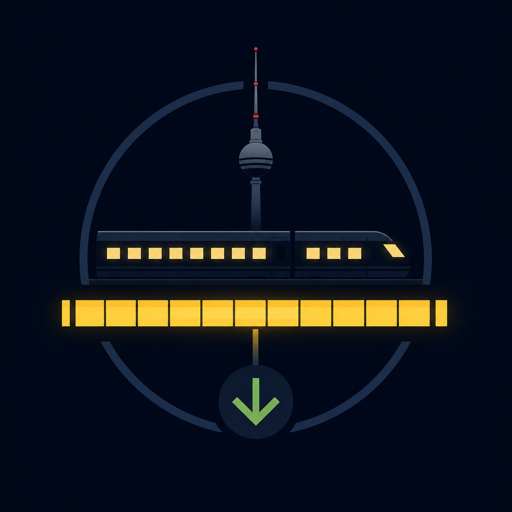

Friday night · Berlin weekend
Berlin Weekend First Night
Move your arrival along the evening rail. The result keeps one useful move for now and releases the rest to Saturday.

A calmer arrival
Set the time you actually expect to arrive in Berlin
This is not a live timetable. It is a way to decide what the evening can honestly carry after the airport or station has already taken its share.
Where are you arriving?
BER: leave the terminal with a live connection checked, then make the hotel transfer your only substantial move.
Slide the arrival marker
A little later changes the goal; it should not add pressure.
Your time rail
There is still room for a small arrival
Your arrival belongs to the part of the evening where a nearby meal or one short outside moment can still be optional, not required.
Keep / release
The sequence that protects Saturday
The one thing to avoid is turning this into a second cross-city journey.
A landmark on the other side of Berlin. If it needs another transfer after the hotel, it belongs to Saturday.